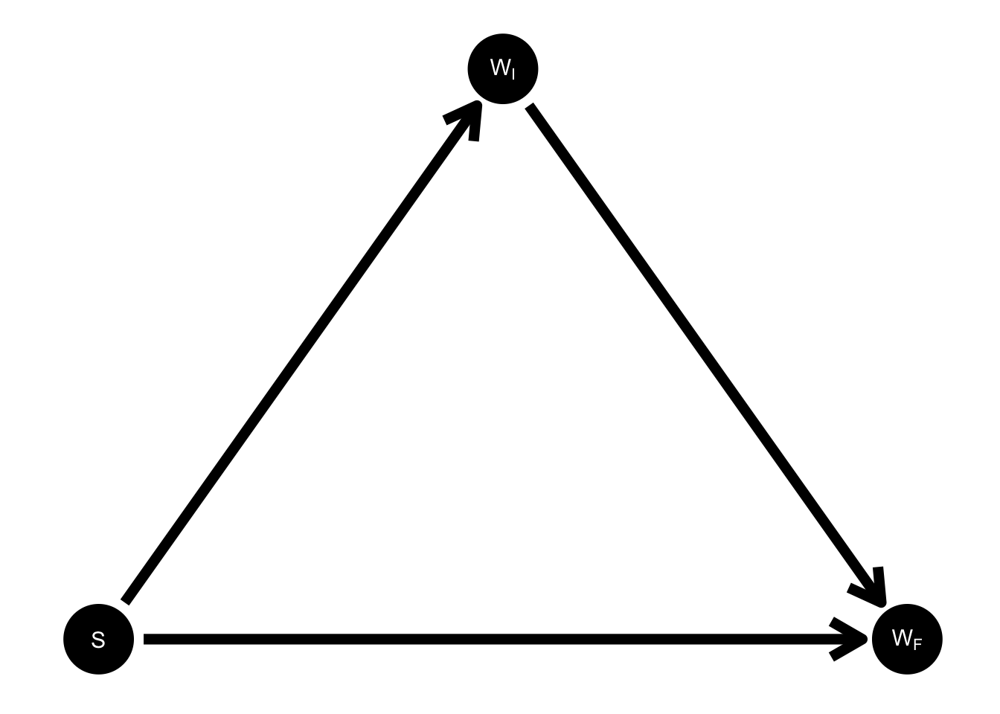
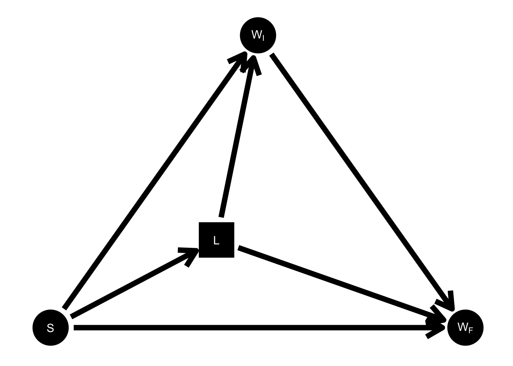
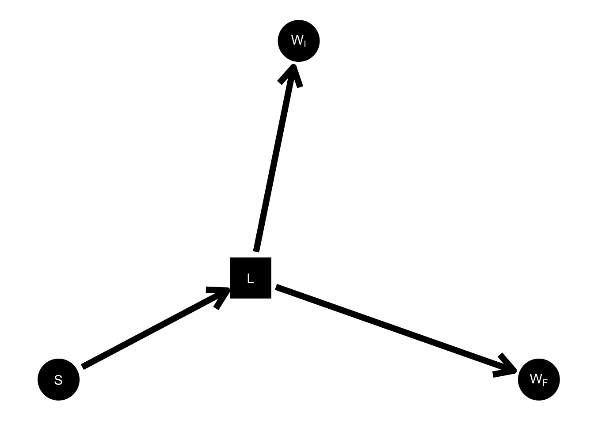
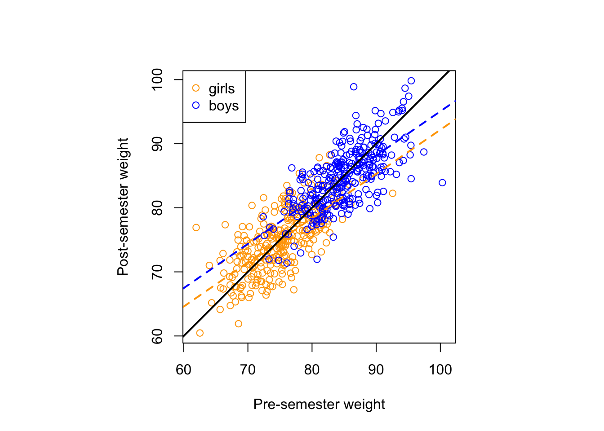

A couple of years ago, I wrote a post on Lord’s paradox in which I argued that introducing a causal model, as Judea Pearl does in his article on the subject (Pearl 2016), was not such an effective way to understand or demystify the paradox. I’m writing the current post because I realized after reading Shiffrin (2020) that a causal model can in fact explain the paradox, but that Pearl got his DAG wrong.
Recap
Recall Lord’s story:
A large university is interested in investigating the effects on the students of the diet provided in the university dining halls and any sex difference in these effects. Various types of data are gathered. In particular, the weight of each student at the time of his arrival in September and his weight the following June are recorded.
Although fictional, Lord’s story is not so contrived or exotic. At a high level of abstraction, we simply have two groups defined by some attribute, and the individuals in each group have had some trait observed at multiple time points.
You might think that it’s difficult to get the DAG wrong for such a simple scenario. After all, there are only three measured variables here: sex, initial weight, and final weight–four if you include the change score, which is given deterministically by final weight minus initial weight.1 Here is the DAG Pearl provides for these variables:
Recall, \(S\) stands for sex, \(W_I\) for initial weight of a student, \(W_F\) for final weight, and \(Y\) for the difference between the two weights, \(Y = W_F - W_I\).
Dropping the change score for the moment, we get the following:

This is the complete DAG on three variables–it includes every possible arrow–so it’s hard to see how it can be wrong. And according to this DAG, the second statistician in the story, who fits the ANCOVA regression \(W_F \sim S + W_I\), estimates a direct effect (that is, unmediated by initial weight) of sex on final weight.
A Lurking Variable
To illustrate what’s going wrong, consider all the intermediate variables, which mediate the “direct effect” of sex on either of the weight variables, \(W_I\) or \(W_F\) in the DAG in Figure 2. I put “direct effect” in quotes because although the effect is direct in the DAG as drawn (there is an arrow from \(S\) to \(W_I\) and to \(W_F\)), the actual mechanism by which sex affects weight is extraordinarily complicated, hence the many intermediate variables. Now suppose that among all the unobserved intermediates between \(S\) to \(W_I\), there is at least one that also mediates a path to \(W_F\). Let’s call this shared mediator \(L\) for latent or lurker.

Before elaborating on what \(L\) might be and why I think this DAG is plausible, let’s first just draw out its implications for the theoretical estimands of the two statisticians in the story. Whereas according to the DAG in Figure 2, Statistician 2’s regression estimates a direct effect of sex on final weight (unmediated by initial weight), by the lights of the DAG in Figure 3, this is no longer the case. This is because in this DAG, \(W_I\) is a descendant of \(L\), and thus, by conditioning on \(W_I\), statistician 2 is blocking not only the path \(S \to W_I \to W_F\), but also, partially, the path \(S \to L \to W_F\). So according to this DAG which includes \(L\), statistician 2 cannnot be said to be estimating any causal parameter. Meanwhile, statistician 1 is still, according to this new DAG, estimating the total effect of sex on change score.
What is L?
It took me a while before I arrived at the DAG in Figure 3. I spent a long time struggling with Pearl’s DAG, which seems completely adequate because it includes all the observed variables in the scenario. The way that I finally arrived at \(L\), this unobserved intermediate variable that mediates both the path from \(S\) to \(W_I\) and the path from \(S\) to \(W_F\), was by reading the short article Shiffrin (2020), which proposes this model:
…assume the two samples of weight for each individual are far enough apart in time that each is an independent sample from a Gaussian distribution with a mean at that individual’s stable long run weight, but with a considerable variance. According to this model the gains and losses for every individual fluctuate around a fixed value for each, so no gain or loss is seen on average.
This long run latent weight is \(L\), and the model described here is the one depicted in Figure 4.

After realizing this, I re-read Tennant et al. (2022), which I had not previously understood, and realized they have the same idea as Shiffrin (2020) of a latent outcome variable.2
Generating Lord’s data according to this DAG
As a sanity check, let’s generate from this causal model with the lurking, latent weight the same fake data from my previous post. Recall that previously, we had directly specified the correlation of initial and final weight as 0.7 and their standard deviation as 5 kg within each gender by simulating these variables simultaneously as a bivariate normal (with the help of MASS::mvrnorm). Now, we will generate the same exact data by simulating variables one at a time according to the DAG in Figure 4. First some algebra.
We will assume an additive noise model for the generation of \(W_I\) and \(W_F\) from \(L\) in Figure 4, i.e.
\[\begin{equation} \begin{aligned} W_I = L + \epsilon_I \\ W_F = L + \epsilon_F, \end{aligned} \end{equation}\]
with \(L\), \(\epsilon_I\), and \(\epsilon_F\) all independent of each other. The covariance of \(W_I\) and \(W_F\) conditional on sex is thus \(\Cov(W_I, W_F \mid S) = \Cov(L + \epsilon_I, L+ \epsilon_F \mid S) = \Var(L \mid S)\).
We want to match the correlations and standard deviations in our previously generated data, that is:
\[\begin{equation} \begin{aligned} \SD(W_I \mid S) = \SD(W_F \mid S) = 5 \\ \Cor(W_I, W_F \mid S) = 0.7, \end{aligned} \end{equation}\]
which forces upon us \[\begin{equation} \begin{aligned} \Var(L \mid S) &= \Cov(W_I, W_F \mid S) \\ &= \Cor(W_I, W_F \mid S) \SD(W_I \mid S)\SD(W_F \mid S) \\ &= 0.7 \times 5 \times 5 = 17.5 \end{aligned} \end{equation}\]
We can then compute the necessary variances for the error terms \(\epsilon_I\) and \(\epsilon_F\), assumed to be equal, using the law of total variance:
\[\begin{equation} \begin{aligned} \Var(\epsilon_F) = \Var(\epsilon_I) = \Var(W_I \mid L, S) = \E\left[\Var(W_I \mid L, S) \mid S \right] &= \Var(W_I \mid S) - \Var\left[\E(W_I \mid S, L) \mid S \right] \\ &= \Var(W_I \mid S) - \Var(L \mid S ) \\ &= 5^2 - 17.5 = 7.5 \end{aligned} \end{equation}\]
Now let’s simulate!
set.seed(770)
n = 300 # number of students of each sex
mu_girls = 75 # Average equilibrium weight for girls (kg)
mu_boys = 85 # Average equilibrium weight for boys (kg)
sd_L = sqrt(17.5) # standard deviation of latent weight
sd_eps = sqrt(7.5) # standard deviation of measured weight given latent
L_girls = rnorm(n, mu_girls, sd_L)
L_boys = rnorm(n, mu_boys, sd_L)
L = c(L_girls, L_boys)
WI = L + rnorm(2*n, 0, sd_eps)
WF = L + rnorm(2*n, 0, sd_eps)
lord = tibble(WI, WF, S = rep(c("girl", "boy"), each = n))Now we plot:
#Run the regression that Statistician 2 did and extract the coefficients
ancov <- lm(WF ~ WI + S, data = lord)
coef = coef(ancov)
coef_boys = coef[c(1,2)]
coef_girls = c(coef[1] + coef[3], coef[2])
#And now let’s plot:
par(pty = "s")
plot(lord$WI,
lord$WF,
col = if_else(lord$S == "girl", "orange", "blue"),
xlab = "Pre-semester weight",
ylab = "Post-semester weight",
asp = 1)
abline(coef = coef_girls, col = "orange", lwd = 2, lty = "dashed")
abline(coef = coef_boys, col = "blue", lwd = 2, lty = "dashed")
abline(0,1, col = "black", lwd = 2)
legend("topleft", legend = c("girls", "boys"),
col = c("orange", "blue"), pch = 1)
Assuming we did the algebra correctly, this should look roughly the same as my plot in the previous post.
Lessons
In my original post, I argued that Pearl’s causal model was not a helpful way to shed light on the paradox. Now I can see that it is not causal modelling writ large that is to blame for failing to adequately explain the paradox–it is just Pearl’s incorrect model that is not helpful. Meanwhile, the correct causal model, i.e. the DAG in Figure 4, is a great way to make sense of the paradox. Of course, common sense alone was always enough to see that Statistician 2 was barking up the wrong tree, but I think this is just because what this common sense amounts to is the understanding that \(W_I\) and \(W_F\) are two measurements of some latent equilibrium weight \(L\)–in other words, an intuitive understanding of the correct causal model.
The final thing I want to say about Lord’s paradox before I never write about it again is that I think it is a prototypical example of a phenomenon in statistics that I’ve observed (often in myself) wherein a paranoia about methodological rigor will get in the way of reaching some straightforward conclusion from a simple analysis of data. Maybe I’m just projecting, but I think this paranoia, which leads people to question whether the most obvious way to analyze some collected data might be horribly mistake, might be the results of how we teach statistics, wherein we focus on all the ways things can go wrong. Exposure to this sort of statistical education might derail one’s analysis by making it more complicated than it needs to be. This would be quite unfortunate, since the goal of statistics is to facilitate the analysis of data, not to unnecessarilly complicate it!
What exactly am I saying here? It is not that the simplest method is always the best, nor do I want to claim that data can never be counter-intuitive or that complicated statistical techniques are never required. In particular, the analysis of covariance (ANCOVA) undertaken by statistician 2 is extraordinarily useful when you are controlling for a pre-treatment variable, as opposed to the situation in Lord’s paradox, where initial weight is downstream (an effect) of sex. One might simply summarize the situation as: use the appropriate tool for the problem, but while this is undoubtedly true, I think (and I’m sure most statisticians agree) that simple, straight-forward analyses are to be much preferred to complex ones when the former are suitable, and I don’t think that people who take statistics course often receive this message. The result can be people abandoning their own common sense when they analyze data, and I think this is basically what we see happening to Statistician 2 in Lord’s paradox.
References
Pearl, Judea. 2016. “Lord’s Paradox Revisited (Oh Lord! Kumbaya!).” Journal of Causal Inference 4 (2). https://doi.org/10.1515/jci-2016-0021.
Shiffrin, RM. 2020. “Lord’s Paradox: A Commentary on Causal Inference.” Ann. Biom. Biostat 5: 1034–36.
Tennant, Peter WG, Georgia D Tomova, Kellyn F Arnold, and Mark S Gilthorpe. 2022. “OP09lord’s ‘Paradox’ Explained: The 50-Year Warning on the Analyses of ‘Change Scores’*.” SSM Annual Scientific Meeting, August. https://doi.org/10.1136/jech-2022-ssmabstracts.9.
Footnotes
The diet served is not actually a variable in this original version of Lord’s story: every student receives the same diet.↩︎
Their causal model of Lord’s paradox allows for more bells and whistles in order to provide a comprehensive picture (see their Figure 3B). In addition, their causal model has separate latent variables for the initial and final weight, but because the latent variable for the initial weight affects the latent variable for final weight in their model, the same lack of identifiability of the direct effect of sex on final weight arises.↩︎